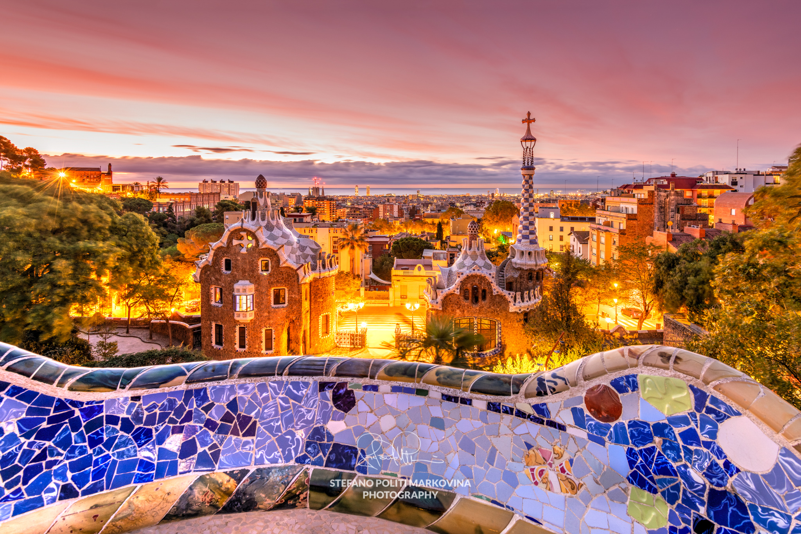
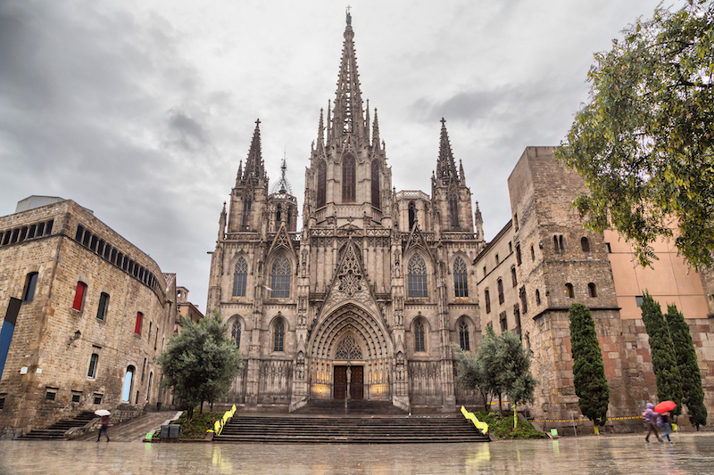

Must-Visit Attractions
-
Sagrada Família

The Sagrada Família is an iconic basilica designed by Antoni Gaudí. Its intricate architecture is a masterpiece of modernism.
-
Park Güell

Park Güell is a colorful park also designed by Gaudí. It's known for its mosaic-covered benches and whimsical architecture.
-
La Rambla
La Rambla is a bustling pedestrian street in the heart of Barcelona, lined with shops, restaurants, and street performers.
-
Gothic Quarter

The Gothic Quarter is a historic neighborhood filled with narrow medieval streets, historic buildings, and charming squares.